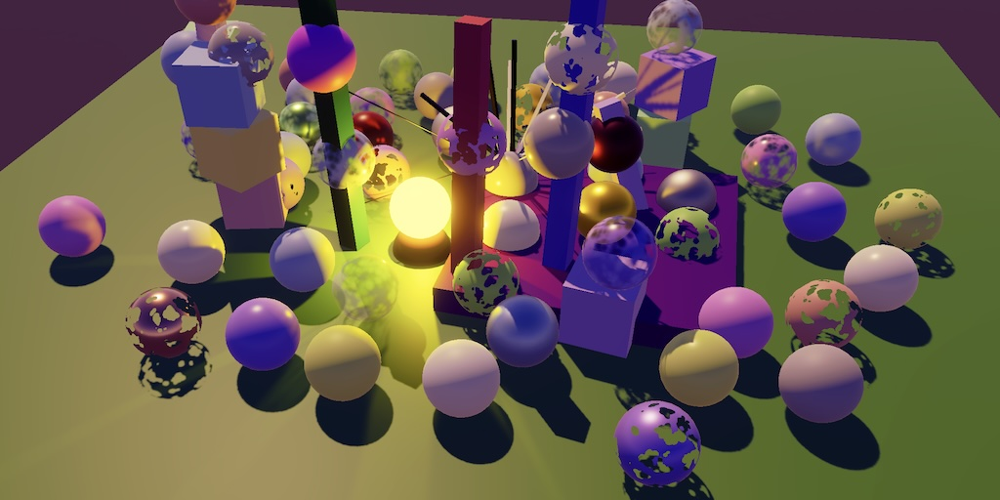

Custom SRP 3.2.0
Simplification

This tutorial is made with Unity 2022.3.48f1 and follows Custom SRP 3.1.0.
Shadow Settings
The official release of Unity 6 is coming, and once it has landed we will migrate our RP to it. In preparation of that event we will simplify the RP a bit, making it more manageable. We begin by trimming some shadow settings.
Filter Quality
We currently support four filter modes: PCF 2×2 which produces hard shadows and PCF 3×3, 5×5, and 7×7 which produce various levels of soft shadows. The filter mode is set separately for directional shadows and other shadows. As these settings are global and are supported via multi-compile shader keywords this produces a lot of shader permutations. This in turn makes a fresh shader build quite slow and bloats the generated app.
We're going to simplify this by switching to unified quality levels, like URP. Introduce a FilterQuality enum type in ShadowSettings with options for low, medium, and high. Add a global filter quality setting, set to medium by default.
public enum FilterQuality
{ Low, Medium, High }
public FilterQuality filterQuality = FilterQuality.Medium;
We'll use PCF 3×3 for all shadows at low quality. Medium quality will use 5×5 and high quality will use 7×7. We no longer provide an option for 2×2. We could use different filter sizes for directional and other shadows per level, but we use the same for simplicity.
The shadow filter size depends on the quality level and as it's now no longer directly obvious which filter is to be used in Shadows, let's add properties to the settings to get the correct filter size, based on how we mapped them. We use separate properties for directional and other shadows to make it possible to use different filter sizes for each, if we would want to.
The filter sizes used to be 1 plus the filter enum value, but because we now start at 3×3 it becomes 2 plus the quality level.
public float DirectionalFilterSize => (float)filterQuality + 2f; public float OtherFilterSize => (float)filterQuality + 2f;
In Shadows, replace the separate filter keyword arrays with a new one that only contains the keywords for medium and high quality, with low being the default when no keyword is used.
// static readonly GlobalKeyword[] directionalFilterKeywords = {// GlobalKeyword.Create("_DIRECTIONAL_PCF3"),// GlobalKeyword.Create("_DIRECTIONAL_PCF5"),// GlobalKeyword.Create("_DIRECTIONAL_PCF7"),// };// static readonly GlobalKeyword[] otherFilterKeywords = {// GlobalKeyword.Create("_OTHER_PCF3"),// GlobalKeyword.Create("_OTHER_PCF5"),// GlobalKeyword.Create("_OTHER_PCF7"),// };static readonly GlobalKeyword[] filterQualityKeywords = { GlobalKeyword.Create("_SHADOW_FILTER_MEDIUM"), GlobalKeyword.Create("_SHADOW_FILTER_HIGH"), };
Now we'll always set the filter quality keyword in Render.
if (shadowedDirLightCount > 0)
{
RenderDirectionalShadows();
}
if (shadowedOtherLightCount > 0)
{
RenderOtherShadows();
}
SetKeywords(filterQualityKeywords, (int)settings.filterQuality - 1);
So we no longer set the directional quality keywords in RenderDirectionalShadows.
buffer.SetBufferData( directionalShadowMatricesBuffer, directionalShadowMatrices, 0, 0, shadowedDirLightCount * settings.directional.cascadeCount);// SetKeywords(// directionalFilterKeywords, (int)settings.directional.filter - 1);
And in the RenderDirectionalShadows method with parameters we have to get the directional filter size and pass it to the DirectionalShadowCascade constructor.
if (index == 0)
{
directionalShadowCascades[i] = new DirectionalShadowCascade(
splitData.cullingSphere,
tileSize, settings.DirectionalFilterSize);
}
This requires us to adjust the DirectionalShadowCascade constuctor method so it directly accepts a float for the filter size.
public DirectionalShadowCascade( Vector4 cullingSphere, float tileSize,// ShadowSettings.FilterMode filterModefloat filterSize) { float texelSize = 2f * cullingSphere.w / tileSize;// float filterSize = texelSize * ((float)filterMode + 1f);filterSize *= texelSize; … }
We also no longer set the keywords in RenderOtherShadows.
buffer.SetBufferData( otherShadowDataBuffer, otherShadowData, 0, 0, shadowedOtherLightCount);// SetKeywords(otherFilterKeywords, (int)settings.other.filter - 1);
And we have to use the other filter size in both RenderSpotShadows and RenderPointShadows.
float filterSize = texelSize * settings.OtherFilterSize;
Moving on to the Lit shader, replace the old multi-compile filter keywords with the new quality keywords.
// #pragma multi_compile _ _DIRECTIONAL_PCF3 _DIRECTIONAL_PCF5 _DIRECTIONAL_PCF7// #pragma multi_compile _ _OTHER_PCF3 _OTHER_PCF5 _OTHER_PCF7#pragma multi_compile _ _SHADOW_FILTER_MEDIUM _SHADOW_FILTER_HIGH
The definitions in Shadows.hlsl also have to be based on the new quality keywords. We keep the separate definitions for directional and other shadows, just set them based on the filter quality level: 7×7 for high, 5×5 for medium, and 3×3 for low.
// #if defined(_DIRECTIONAL_PCF3)// …// #endif// #if defined(_OTHER_PCF3)// …// #endif#if defined(_SHADOW_FILTER_HIGH) #define DIRECTIONAL_FILTER_SAMPLES 16 #define DIRECTIONAL_FILTER_SETUP SampleShadow_ComputeSamples_Tent_7x7 #define OTHER_FILTER_SAMPLES 16 #define OTHER_FILTER_SETUP SampleShadow_ComputeSamples_Tent_7x7 #elif defined(_SHADOW_FILTER_MEDIUM) #define DIRECTIONAL_FILTER_SAMPLES 9 #define DIRECTIONAL_FILTER_SETUP SampleShadow_ComputeSamples_Tent_5x5 #define OTHER_FILTER_SAMPLES 9 #define OTHER_FILTER_SETUP SampleShadow_ComputeSamples_Tent_5x5 #else #define DIRECTIONAL_FILTER_SAMPLES 4 #define DIRECTIONAL_FILTER_SETUP SampleShadow_ComputeSamples_Tent_3x3 #define OTHER_FILTER_SAMPLES 4 #define OTHER_FILTER_SETUP SampleShadow_ComputeSamples_Tent_3x3 #endif
This change replaces a 4×4=16 shader permutation factor with just 3, so we've reduced the amount of permutations to only 3/16 of what it was before: a reduction of 81.25%.
Cascade Blending
Let's move on to the cascade blending options in ShadowSettings.Directional. We currently support three modes: hard, soft, and dither. However, there isn't a compelling reason anymore to support hard mode. So we introduce a new toggle option here for soft cascade blending only, the alternative being dithered blending.
public bool softCascadeBlend;
Replace the old cascade blend keyword array in Shadows with a single new keyword for soft cascade blending.
// static readonly GlobalKeyword[] cascadeBlendKeywords = {// GlobalKeyword.Create("_CASCADE_BLEND_SOFT"),// GlobalKeyword.Create("_CASCADE_BLEND_DITHER"),// };static readonly GlobalKeyword softCascadeBlendKeyword = GlobalKeyword.Create("_SOFT_CASCADE_BLEND");
Set this keyword in RenderDirectionalShadows instead of the old ones.
// SetKeywords(// cascadeBlendKeywords, (int)settings.directional.cascadeBlend - 1);buffer.SetKeyword( softCascadeBlendKeyword, settings.directional.softCascadeBlend);
Replace the old multi-compile in the Lit shader with the new one.
// #pragma multi_compile _ _CASCADE_BLEND_SOFT _CASCADE_BLEND_DITHER#pragma multi_compile _ _SOFT_CASCADE_BLEND
Also adjust GetShadowData in Shadows.hlsl so it uses the new keyword, doing away with the hard transition option.
// #if defined(_CASCADE_BLEND_DITHER)#if !defined(_SOFT_CASCADE_BLEND) else if (data.cascadeBlend < surfaceWS.dither) { i += 1; }// #endif//#if !defined(_CASCADE_BLEND_SOFT)data.cascadeBlend = 1.0; #endif
This change also reduces the amount of permutations, in this case replacing a factor 3 with a factor 2. Combined with the filter quality change, the total reduction factor is 6/48=1/8, so in total we've eliminated 87.5% of the permutations of the lit pass.
Deprecated Settings
These changes have deprecated some configuration options in ShadowSettings. We keep them for a short while, marking them as deprecated. First the directional cascade blending and filter mode. We also don't need to set the old filter's default value anymore.
public struct Directional
{
public MapSize atlasSize;
// public FilterMode filter;
…
[Header("Deprecated Settings"), Tooltip("Use new boolean toggle.")]
public CascadeBlendMode cascadeBlend;
[Tooltip("Use new Filter Quality.")]
public FilterMode filter;
}
public Directional directional = new()
{
atlasSize = MapSize._1024,
// filter = FilterMode.PCF2x2,
…
};
The same goes for the filter mode of the other shadows.
public struct Other
{
public MapSize atlasSize;
[Header("Deprecated Settings"), Tooltip("Use new Filter Quality.")]
public FilterMode filter;
}
public Other other = new()
{
atlasSize = MapSize._1024 // ,
// filter = FilterMode.PCF2x2
};
Lights Per Object
We had already deprecated the lights-per-object lighting mode, but kept its functionality. We'll now remove it.
Lighting Pass
In LightingPass, remove the keyword for lights-per-object mode and the field that tracks whether it is used.
// static readonly GlobalKeyword lightsPerObjectKeyword =// GlobalKeyword.Create("_LIGHTS_PER_OBJECT");…// bool useLightsPerObject;
Remove the usage of that field from Setup. Now we simply always do the work related to Forward+ lighting.
void Setup( CullingResults cullingResults, Vector2Int attachmentSize, ForwardPlusSettings forwardPlusSettings, ShadowSettings shadowSettings,// bool useLightsPerObject,int renderingLayerMask) { this.cullingResults = cullingResults;// this.useLightsPerObject = useLightsPerObject;shadows.Setup(cullingResults, shadowSettings);// if (!useLightsPerObject)// {maxLightsPerTile = forwardPlusSettings.maxLightsPerTile <= 0 ? 31 : forwardPlusSettings.maxLightsPerTile; … tileCount.y = Mathf.CeilToInt(screenUVToTileCoordinates.y);// }SetupLights(renderingLayerMask); }
The same goes for the SetupForwardPlus method.
void SetupForwardPlus(int lightIndex, ref VisibleLight visibleLight)
{
// if (!useLightsPerObject)
// {
Rect r = visibleLight.screenRect;
lightBounds[lightIndex] = float4(r.xMin, r.yMin, r.xMax, r.yMax);
// }
}
SetupLights can also be simplified. We no longer need to deal with the light index map and the Forward+ code now always executes.
void SetupLights(int renderingLayerMask)
{
// NativeArray<int> indexMap = useLightsPerObject ?
// cullingResults.GetLightIndexMap(Allocator.Temp) : default;
…
for (i = 0; i < visibleLights.Length; i++)
{
// int newIndex = -1;
VisibleLight visibleLight = visibleLights[i];
Light light = visibleLight.light;
if ((light.renderingLayerMask & renderingLayerMask) != 0)
{
switch (visibleLight.lightType)
{
…
case LightType.Point:
if (otherLightCount < maxOtherLightCount)
{
// newIndex = otherLightCount;
…
}
break;
case LightType.Spot:
if (otherLightCount < maxOtherLightCount)
{
// newIndex = otherLightCount;
…
}
break;
}
}
// if (useLightsPerObject)
// {
// indexMap[i] = newIndex;
// }
}
// if (useLightsPerObject) { … }
// else {
tileData = new NativeArray<int>(
TileCount * tileDataSize, Allocator.TempJob);
forwardPlusJobHandle = new ForwardPlusTilesJob
{
…
}.ScheduleParallel(TileCount, tileCount.x, default);
// }
}
Next, the lights-per-object code can be removed from Render.
void Render(RenderGraphContext context)
{
CommandBuffer buffer = context.cmd;
// buffer.SetKeyword(lightsPerObjectKeyword, useLightsPerObject);
…
// if (useLightsPerObject) { … }
forwardPlusJobHandle.Complete();
…
}
Finally, eliminated the lights-per-object setting from Record.
public static LightResources Record( RenderGraph renderGraph, CullingResults cullingResults, Vector2Int attachmentSize, ForwardPlusSettings forwardPlusSettings, ShadowSettings shadowSettings,// bool useLightsPerObject,int renderingLayerMask) { using RenderGraphBuilder builder = renderGraph.AddRenderPass( sampler.name, out LightingPass pass, sampler); pass.Setup(cullingResults, attachmentSize, forwardPlusSettings, shadowSettings,// useLightsPerObject,renderingLayerMask); …// if (!useLightsPerObject)// {pass.tilesBuffer = builder.WriteComputeBuffer( renderGraph.CreateComputeBuffer(new ComputeBufferDesc { name = "Forward+ Tiles", count = pass.TileCount * pass.maxTileDataSize, stride = 4 }));// }… }
Geometry Pass
GeometryPass also needed to know whether lights-per-object mode is used, because then the light data and light indices had to be part of the renderer configuration for the renderer lists. This is no longer needed, so remove that.
public static void Record( RenderGraph renderGraph, Camera camera, CullingResults cullingResults,// bool useLightsPerObject,int renderingLayerMask, bool opaque, in CameraRendererTextures textures, in LightResources lightData) { … pass.list = builder.UseRendererList(renderGraph.CreateRendererList( new RendererListDesc(shaderTagIDs, cullingResults, camera) { … rendererConfiguration = … PerObjectData.OcclusionProbeProxyVolume,// |// (useLightsPerObject ?// PerObjectData.LightData | PerObjectData.LightIndices :// PerObjectData.None),renderQueueRange = opaque ? RenderQueueRange.opaque : RenderQueueRange.transparent, renderingLayerMask = (uint)renderingLayerMask })); … }
Camera Renderer
We now no longer need to pass along whether lights-per-object mode is used in CameraRenderer.Render. Also, we decided to always use an intermediate buffer when using Forward+ lighting to avoid frame buffer shenanigans. As we now always use Forward+ we can just set useIntermediateBuffer to true, eliminating all logic that decides whether to do that or not. We'll further simplify the related code later.
public void Render(
RenderGraph renderGraph,
ScriptableRenderContext context,
Camera camera,
CustomRenderPipelineSettings settings)
{
…
// bool useLightsPerObject = settings.useLightsPerObject;
…
bool useIntermediateBuffer = true;
…
using (renderGraph.RecordAndExecute(renderGraphParameters))
{
using var _ = new RenderGraphProfilingScope(
renderGraph, cameraSampler);
LightResources lightResources = LightingPass.Record(
renderGraph, cullingResults, bufferSize,
settings.forwardPlus, shadowSettings, // useLightsPerObject,
cameraSettings.maskLights ? cameraSettings.renderingLayerMask :
-1);
…
GeometryPass.Record(
renderGraph, camera, cullingResults, // useLightsPerObject,
cameraSettings.renderingLayerMask, true,
textures, lightResources);
SkyboxPass.Record(renderGraph, camera, textures);
…
GeometryPass.Record(
renderGraph, camera, cullingResults, // useLightsPerObject,
cameraSettings.renderingLayerMask, false,
textures, lightResources);
…
}
…
}
Shader
Moving on to the Lit shader, remove the multi-compile keyword for the lights-per-object mode from its first pass. This again halves the amount of permutations.
// #pragma multi_compile _ _LIGHTS_PER_OBJECT
We can now remove the lights-per-object code path from Lighting.hlsl, only keeping the Forward+ code.
float3 GetLighting(Fragment fragment, Surface surfaceWS, BRDF brdf, GI gi)
{
…
// #if defined(_LIGHTS_PER_OBJECT)
// …
// #else
ForwardPlusTile tile = GetForwardPlusTile(fragment.screenUV);
int lastLightIndex = tile.GetLastLightIndexInTile();
for (int j = tile.GetFirstLightIndexInTile(); j <= lastLightIndex; j++)
{
Light light = GetOtherLight(
tile.GetLightIndex(j), surfaceWS, shadowData);
if (RenderingLayersOverlap(surfaceWS, light))
{
color += GetLighting(surfaceWS, brdf, light);
}
}
// #endif
return color;
}
We also no longer need to declare unity_LightData and unity_LightIndices in UnityInput.hlsl.
// real4 unity_LightData;// real4 unity_LightIndices[2];
Always Use Intermediate Buffer
Earlier we determined that we now always render to an intermediate buffer. We can use this to simplify things further. To begin with, SetupPass no longer needs to track whether intermediate attachments are used, because that's always the case.
// bool useIntermediateAttachments;
So the render target must always be set in Render.
void Render(RenderGraphContext context)
{
…
// if (useIntermediateAttachments)
// {
cmd.SetRenderTarget(
colorAttachment,
RenderBufferLoadAction.DontCare, RenderBufferStoreAction.Store,
depthAttachment,
RenderBufferLoadAction.DontCare, RenderBufferStoreAction.Store);
// }
…
}
Record can also be simplified, always using intermediate textures.
public static CameraRendererTextures Record( RenderGraph renderGraph,// bool useIntermediateAttachments,bool copyColor, bool copyDepth, bool useHDR, Vector2Int attachmentSize, Camera camera) { using RenderGraphBuilder builder = renderGraph.AddRenderPass( sampler.name, out SetupPass pass, sampler);// pass.useIntermediateAttachments = useIntermediateAttachments;pass.attachmentSize = attachmentSize; pass.camera = camera; pass.clearFlags = camera.clearFlags;// TextureHandle colorAttachment, depthAttachment;TextureHandle colorCopy = default, depthCopy = default;// if (useIntermediateAttachments)// {… TextureHandle colorAttachment = pass.colorAttachment = builder.WriteTexture(renderGraph.CreateTexture(desc)); … TextureHandle depthAttachment = pass.depthAttachment = builder.WriteTexture(renderGraph.CreateTexture(desc)); …// }// else { … }… }
GizmosPass also needed to know whether intermediate textures are used, because in that case it requires a depth copy. This is now always the case, so we no longer need to track that.
// bool requiresDepthCopy;
Always copy depth in Render.
void Render(RenderGraphContext context)
{
…
// if (requiresDepthCopy)
// {
copier.CopyByDrawing(buffer, depthAttachment,
BuiltinRenderTextureType.CameraTarget, true);
renderContext.ExecuteCommandBuffer(buffer);
buffer.Clear();
// }
…
}
And simplify Record.
public static void Record( RenderGraph renderGraph,// bool useIntermediateBuffer,CameraRendererCopier copier, in CameraRendererTextures textures) { #if UNITY_EDITOR if (Handles.ShouldRenderGizmos()) { using RenderGraphBuilder builder = renderGraph.AddRenderPass( sampler.name, out GizmosPass pass, sampler);// pass.requiresDepthCopy = useIntermediateBuffer;pass.copier = copier;// if (useIntermediateBuffer)// {pass.depthAttachment = builder.ReadTexture( textures.depthAttachment);// }builder.SetRenderFunc<GizmosPass>( static (pass, context) => pass.Render(context)); } #endif }
Finally, eliminate the useIntermediateBuffer variable from CameraRenderer.Render.
public void Render(…)
{
…
// bool useIntermediateBuffer = true;
…
using (renderGraph.RecordAndExecute(renderGraphParameters))
{
…
CameraRendererTextures textures = SetupPass.Record(
renderGraph, //useIntermediateBuffer,
useColorTexture,
useDepthTexture, bufferSettings.allowHDR, bufferSize, camera);
…
if (hasActivePostFX)
{
…
}
else //if (useIntermediateBuffer)
{
FinalPass.Record(renderGraph, copier, textures);
}
DebugPass.Record(renderGraph, settings, camera, lightResources);
GizmosPass.Record(renderGraph, //useIntermediateBuffer,
copier, textures);
}
…
}
We're now in good shape to make the jump to Unity 6, which we do in the next tutorial, which is Custom SRP 4.0.0.
license repository PDF